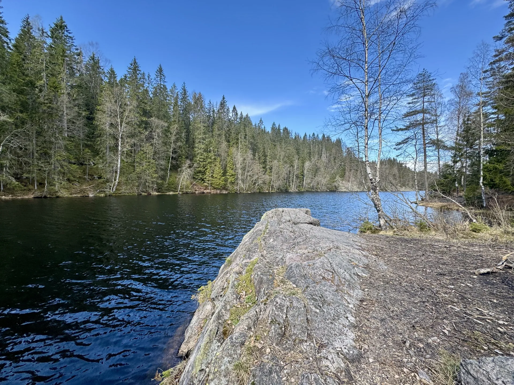

Renting an e-bike in Oslo, and how far it takes you
Most people rent an e-bike in Oslo to make the hills go away. That works, but it undersells what the motor does here. The Nordmarka forest starts at the end of the metro line and runs north for kilometres of gravel, lakes and cabins, and on an ordinary bike most visitors see the first few lakes and turn round. On an e-bike, the far end of the map comes within reach of a single day.
So the useful question is not whether you can manage the climbs. It is how far you want to go, and whether the battery agrees.
The obvious answer is anyone worried about fitness, and that is fair. Oslo sits in a bowl, and every way into the forest goes uphill. But the riders who get the most out of an e-bike tend to be these:
Who should skip it? Anyone who came for the workout, and anyone planning a ride that does not leave the valley floor. The flat loop around Maridalsvannet is lovely on any bike, and paying for a battery there buys you very little. If you are weighing the two, our gravel bike rental guide covers the other side of the choice.
Nobody can give you an honest single number for range, and anyone who does is quoting a flat road on a mild day. In the forest, four things decide how long the battery lasts:
The rule we give every renter is simple: check the battery at the point you planned as halfway. If more than half is gone, take the shorter way home. The forest roads are full of junctions that let you cut a loop short, and pedalling an e-bike with a flat battery uphill is the one thing that is genuinely harder than doing it on a normal bike.
We rent two e-bikes, and the choice comes down to the day you have planned.
The Premium E-Bike is the one most visitors take, at NOK 899 for the first day and less for each day after. It is built for a normal forest day: a few lakes, a cabin stop, home in the afternoon. The Long Range E-Bike, at NOK 1 199, carries the biggest battery in the fleet. Take it for Ring 4, for anything that heads deep into the forest, or if you know you will live in the higher modes. It removes the arithmetic from the day.
These are the rides we point e-bike renters at, and what the motor changes on each.
Rolling forest roads with the first real climbs. On a gravel bike it is a solid three-hour ride. On an e-bike it is relaxed enough to add a detour to another lake and still be back for an early dinner.
Oslo's classic gravel loop, with around 1 000 metres of shallow, unbroken climbing and waffles at Kikutstua about halfway. That climbing profile is exactly what assistance flattens. Our Ring 4 guide has the route and a free GPX.
Remote lakes, sustained climbing and very few people. On a normal bike this is a hard day for fit riders. On the Long Range E-Bike it becomes a realistic full day for most people, which is the whole point of having one.
A pedal-assisted e-bike that stops helping at 25 km/h is treated as an ordinary bicycle in Norway. There is no licence, no registration, and you ride it on the same forest roads and gravel paths as everyone else. Stay on the roads and paths; riding off them damages the forest floor.
Charge the battery overnight and keep the bike indoors if you have it for more than a day, especially in autumn. Cold batteries charge slowly and give up early. The forest has patchy phone signal and no charging points, so leave with a full battery rather than hoping to top up.
Daylight matters more than range for much of the year. Check the Nordmarka riding conditions before you go: it shows the forecast for the forest and the latest start time that still gets you home before sunset.
Marka Bikes by Oslo Bike Tours rents the Premium and Long Range e-bikes from NOK 899 a day, with a helmet and lights included and pickup at the edge of the forest.
Rent an e-bikeWith Marka Bikes by Oslo Bike Tours, the Premium E-Bike is NOK 899 for the first day and the Long Range E-Bike is NOK 1 199, with every extra day costing less. A helmet, lights, pump, spare inner tube and multi-tool are included, and pickup at Sognsvann, Kjelsås, Huseby or Oslo S is free.
It depends on how much you climb, which assist mode you use and how cold it is, so any single number is a guess. The Premium E-Bike covers a normal forest day. For Ring 4 or longer rides deep into the forest, take the Long Range E-Bike. Either way, check the battery at your planned halfway point and take a shorter way home if more than half is gone.
No. An e-bike whose motor assists only while you pedal and stops helping at 25 km/h counts as an ordinary bicycle in Norway. You need no licence or registration, and you can ride it on the same roads, cycle lanes and forest roads as any other bike.
Yes. Pedal-assisted e-bikes can use the forest roads and gravel paths in the Nordmarka just like normal bikes. Stay on the roads and paths, and leave them to the skiers once the snow settles in winter.
For most visitors, yes. Ring 4 is 50 to 55 km with around 1 000 metres of climbing that barely lets up, which is exactly the kind of riding an e-bike makes easy. Take the Long Range E-Bike so the battery is never on your mind.
We have four free pickup points: Sognsvann, Kjelsås and Huseby at the edge of the forest, and Oslo S in the city centre. We lock the bike at your pickup point and text you the code. Delivery to your hotel or address costs NOK 399.